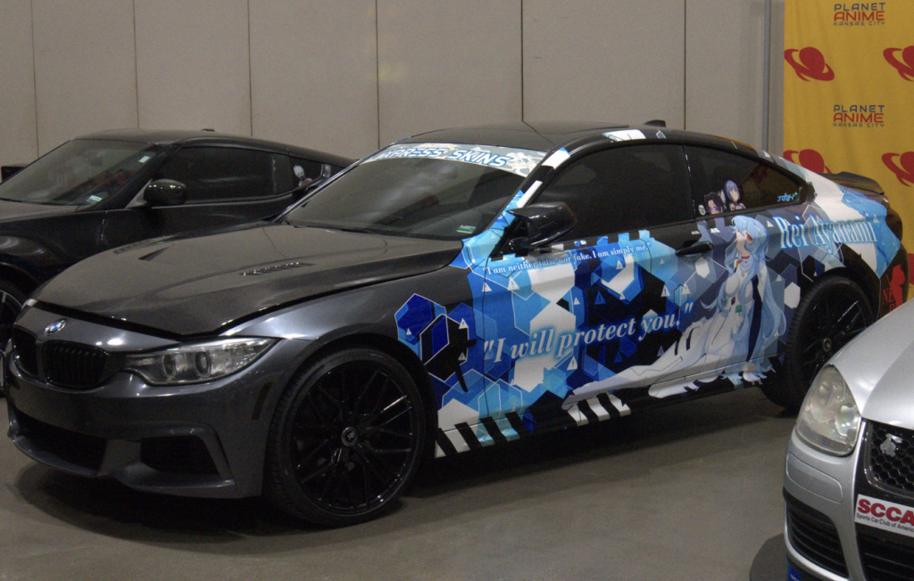
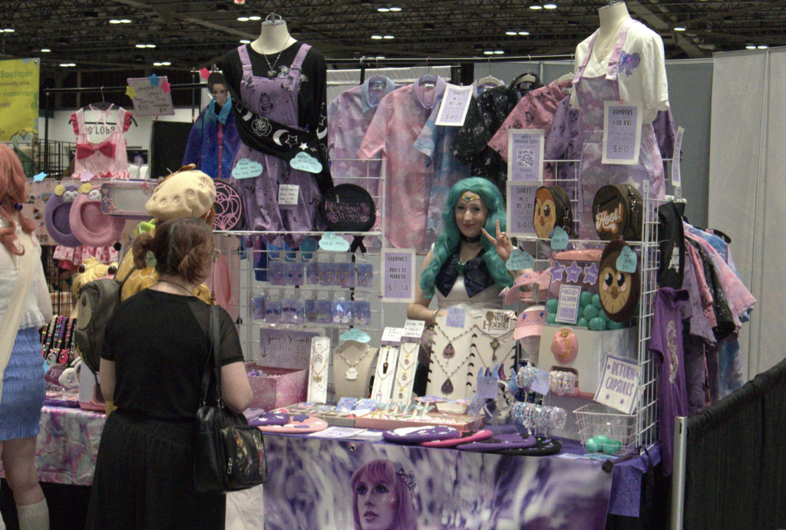
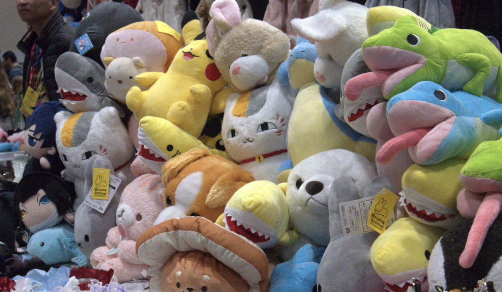
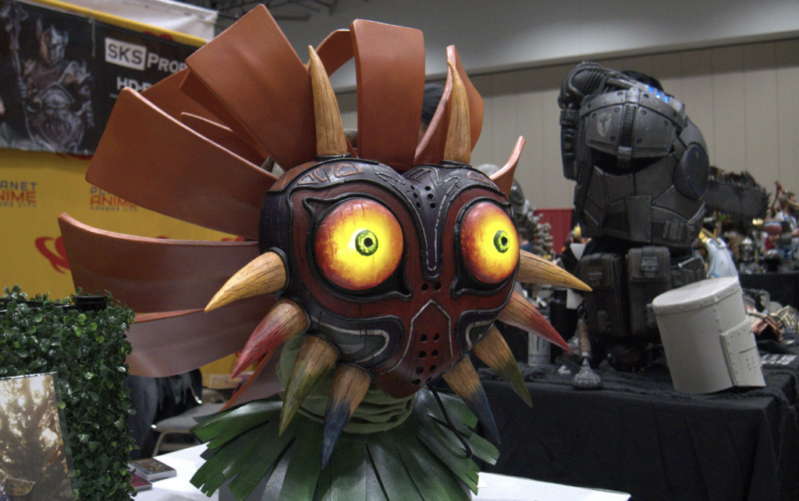
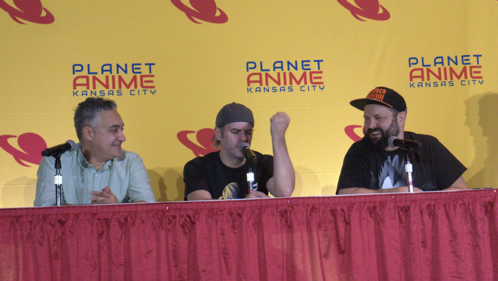

Planet Promotions’ first entry into the ever-growing category of autumnal anime conventions, Planet Anime, was a grand show of force—with an incredible array of vendors, panelists, celebrity guests, and corporate sponsors, the Planet Anime team made sure to leave their mark on the space.
Spanning three days from October 20-22, the event’s schedule was jam-packed with events and plenty to keep everyone entertained. Although it may have been a bit too much for one person to be able to go to everything on their own, the event came with plenty of variety for all in attendance, from The Page Mage’s traveling manga library to getting your favorite voice actor’s autograph.
Hall D at the Kansas City Convention Center was filled from wall to wall with artists, artisans, cosplayers, retailers, and plenty of others from both Kansas City proper and the surrounding areas of the Midwest. We made sure to stop by plenty of booths and talk to as many local vendors as we could, like Starcrossed Lovelies, a designer working in collaboration with local retailer Lolita Collective in Lee’s Summit. When we asked them about their work, they eagerly let us know that they “noticed there weren’t a lot of places here in the area catering to this kind of magical girl, EGL style, and we really wanted to make sure we were here to be able to let people know that we are here and that it is possible to get these kinds of things locally!”
Beyond clothing, there were plenty of artists and artisans selling everything from 3D printed Poké Ball terrariums to almost anything you could get your favorite characters from Genshin Impact, Honkai Star Rail, One Piece, or Jujutsu Kaisen printed on: keychains, posters, life-sized pillowcases, some… ahem, wrist-supporting mouse pads, and more were all for sale in the walls of Hall D.
If shopping wasn’t quite what people were looking for, a significant portion of Hall D was also dedicated to arcade games, gaming setups, cars with anime-style liveries that look straight out of the newest open-world racing games, and an entire section dedicated to cosplay.
Speaking of cosplay — we got a chance to sit down with Stephen from SKS Prop and Costume Supply and Sparqy, two cosplayers and propmakers showcasing their talents at their respective booths. Stephen works with game companies by day, and makes sure to post all of his processes, materials, and design templates on his website in order to make the hobby more accessible and approachable to newcomers. With everything from his massively impressive Chainsaw Man props to the official Elden Ring cosplay he created in collaboration with Bandai Namco, it’s clear that Stephen is a master of his craft and cares deeply about it. On top of that, Stephen has his own special brand of craft foam, HD-Foam, that he sells through Blick Art Supplies nationwide.
Sparqy, dressed in full Princess Zelda regalia, walked us through the process of creating their incredible replica of Majora’s Mask from the Legend of Zelda game that bears its name. Highlighting specific areas of the mask, like its wood grain and glowing eyes, they told us about the entire process, from drawing the individual pieces and craving them out of foam, then molding the prototype in plaster, filling the mold with epoxies, sanding, painting, and everything. For anyone looking into getting into the hugely open-ended hobby of cosplay, these two are definitely people to watch for inspiration.
After all that walking in Hall D, visitors can definitely get peckish — I know I certainly did. Luckily, there was no shortage of local food vendors. Grabbing a boba from Fatbee, a mochi donut or two from Oki Mochi, and a burger full of Korean flavors at Go Chew Burger were all stops that felt necessary after a long day on the show floor.
While it may have taken up a lot of time, the exhibit hall and food vendors are not all there were to Planet Anime’s first outing. A bevy of incredible voice talent from across a ton of shows were all there to sign autographs, talk to people on the floor, and host panels of their own. Even names like Chris Sabat from Dragon Ball, Ryan Bartley from Neon Genesis Evangelion, and even the cast of the new Spider-Man 2 game for the PlayStation 5, Yuri Lowenthal, Nadji Jeter, Tony Todd, and Tara Platt were among them.
Friday night brought the Spider-Man 2 panel and Drag-ime’s Sailor Moon Cosplay Caper, both of which were an incredible time. The Spider-Man panel, hosted by the voice cast, was full of insights into the game’s development, what it’s like to voice in a video game versus in an anime or movie, and in Tony Todd’s case, having a career that spans everything from cult classic Candyman to voicing one of the biggest antagonists in the superhero genre. The Sailor Moon Cosplay Caper was a delightful on-stage romp that mirrored some of the best episodes of the original anime, complete with over-the-top villains using hairspray to try and control the heroes and a full Sailor Moon commercial break (man, there were a LOT of official Sailor Moon toys and products back then, weren’t there?)
Saturday brought voice talent panels from the likes of Demon Slayer, Death Note, and Naruto, with Chris Sabat even hosting a personal Q&A/tell-all panel of his own. Saturday evening brought us the first-ever Planet Anime Cosplay Contest, with Best in Show going to Kaisley’s Sailor Moon cosplay, Best Master going to Shurtugal Cosplay’s cosplay of Christine Daaè from Phantom of the Opera, Best Intermediate going to Fancy Jen Cosplay’s Azula from Avatar: the Last Airbender, and Best Beginner going to DuckDuckMoose’s Sophie from Howl’s Moving Castle.
All in all, the first ever Planet Anime was a resounding success; Kansas City is definitely not going to be left wanting for great anime conventions here at home in the future.